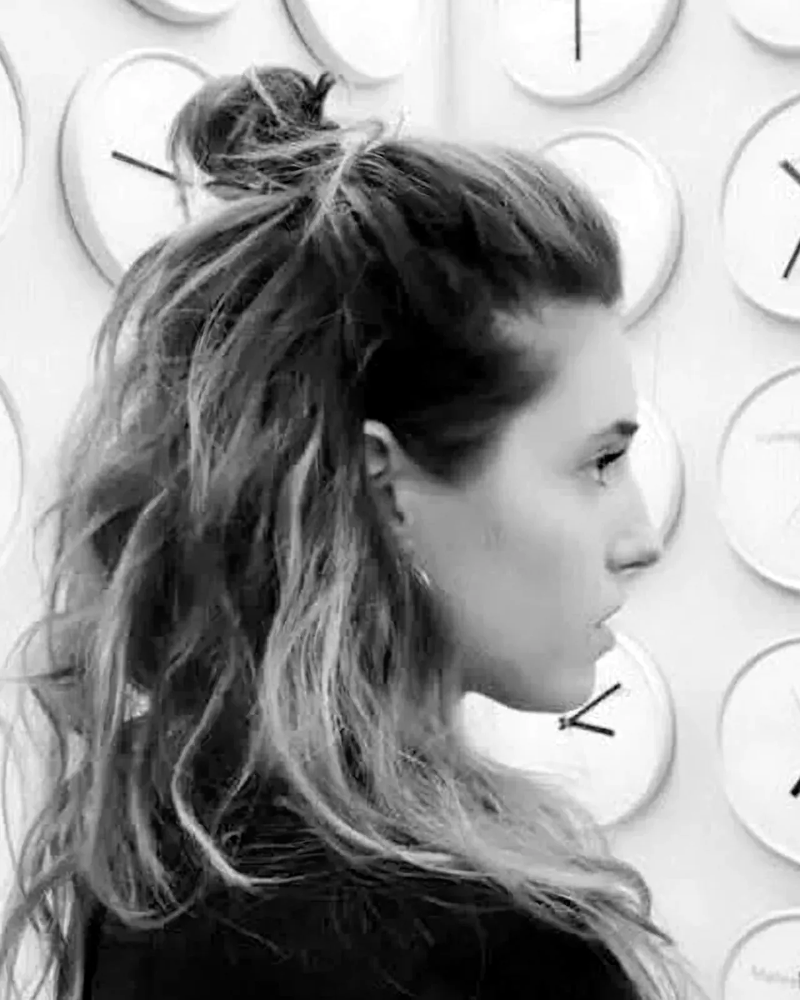
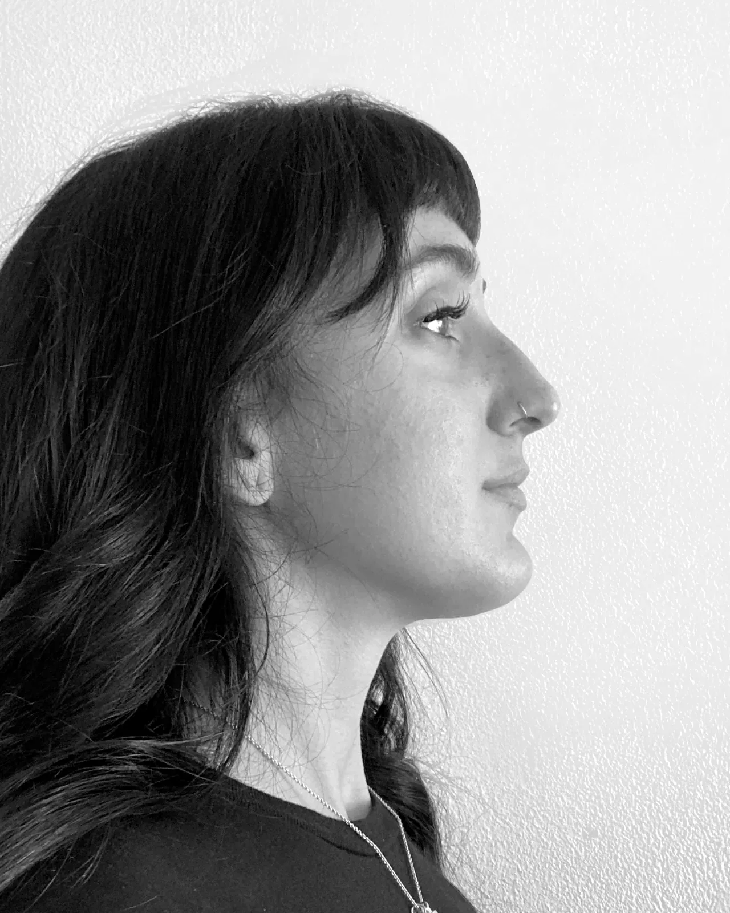
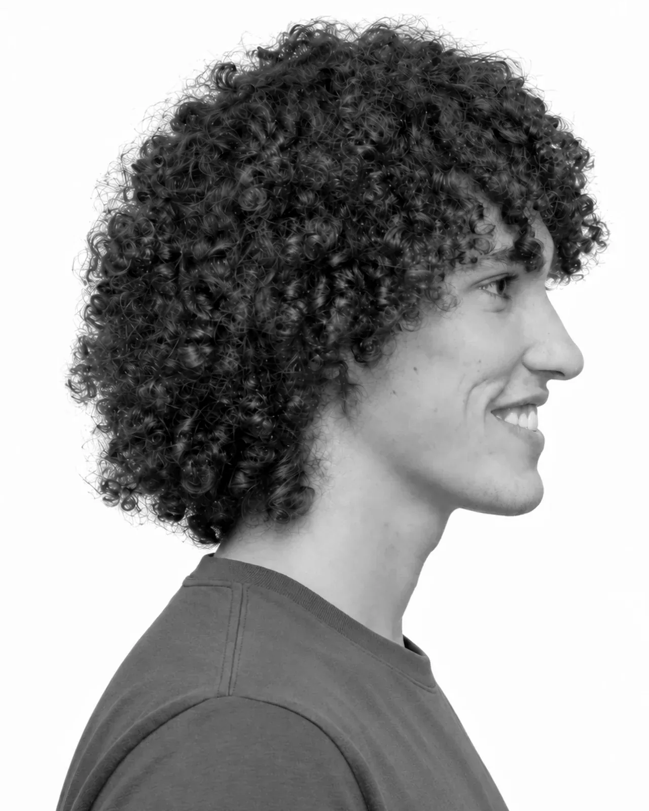
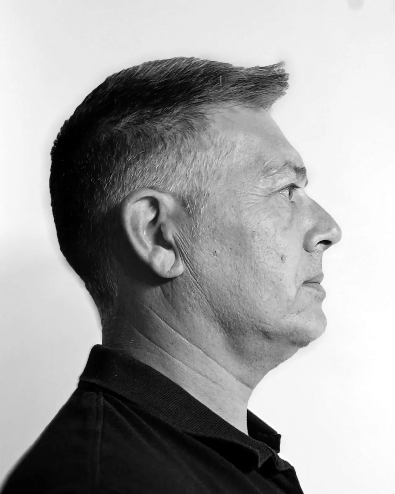

Ospiti di PRO-FILI · Musica e cantautorato
Musica e cantautorato, da Nihil Land (forse).
Mi chiamo Nihil, sono nato in data da destinarsi su un pianeta lontano (forse): Nihil Land. Sono l'erede al trono di un regno senza terra, che Padre mi ha lasciato in dote; un pianeta devastato, in cui ho vissuto da solo per vari eoni.
Dopo un'età dell'oro, in cui scorrevano latte e miele e Dio e Satana andavano per mano, una guerra ha spopolato la mia terra. Quelli migliori sono partiti verso altri mondi. Non io, monarca infame senza corona. Fu allora che, nella solitudine più assoluta, imparai a conoscere voi terrestri, la vostra cultura. Fu grazie al rapporto telepatico con Dente d'oro, il potente pirata che ha depredato tutti i miei averi, rubandomi l'anima. Da allora viaggio per ritrovarlo.
Mi sono fermato qui, dove mi vedete, nel luogo adatto a ritrovare me stesso: un giardino della fioritura. Ho scoperto la musica; su Nihil Land non esisteva. Trovo che sia un mezzo eccezionale per fare viaggi mentali, di quelli che ti fanno entrare in contatto con l'anima.
PRO-FILI Festival

Arti visive · installazione
Installazioni di fili e nodi, tra spazio e materia.

Illustrazione · Unnyverso
Dà colore e voce alle storie, soprattutto per i bambini.

Cantautorato
Cantautore, autore del disco «In cerca di un filo».

Pittura
Cerca nelle stanze più profonde, e le scale che portano in alto.